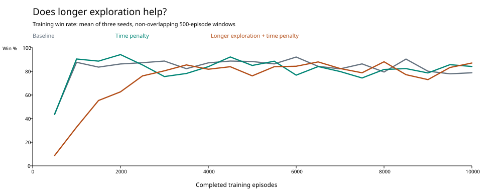
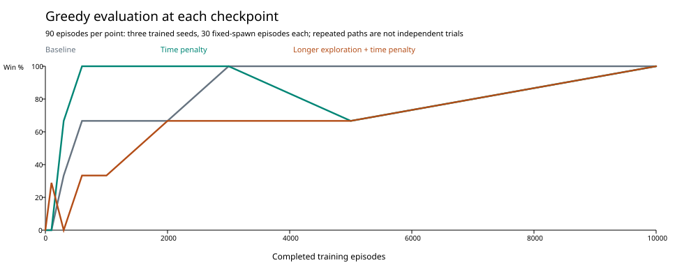

PLATFORMER EXPERIMENT 03 · 16 OCTOBER 2026
Give exploration five times longer
The only new change is exploration decay: 0.995 → 0.999 per completed training episode. Exploration starts at 100% and reaches its unchanged 5% floor after 2,995 episodes instead of 598. The −0.001 time cost per six-frame decision stays enabled. Physics, observations, actions, other rewards, learning rate and discount are unchanged.
Longer exploration produced better final routes in these three seeds, but it did not make learning consistently reliable.
At 10,000 episodes, all three conditions won all 90 greedy evaluations. Longer exploration averaged 6.36 seconds per successful episode, compared with 8.18 for the baseline and 8.54 for time penalty alone. Actual takeoffs fell to 10.3 per episode, from 13.3 and 14.0. That is about 26% faster with 26% fewer takeoffs than time penalty alone. Each new seed was faster than its baseline counterpart; two were faster than their time-penalty counterparts and the third had the same duration.
The cost was a slower start. Overall training success was 73.5%, versus 83.1% baseline and 81.7% time penalty alone. In the first 1,000 episodes it was only 20.7%, versus 65.8% and 67.0%. This is partly expected: at episode 1,000 the new agent still selects random actions 36.8% of the time, while the old schedules are already at 5%. Do not interpret training win rate alone as the quality of the greedy policy.
After all schedules reached the same 5% exploration floor, gains were modest. Across episodes 5,001–10,000, training success was 82.6%, between baseline's 83.8% and time penalty's 81.6%. The final 1,000 episodes reached 85.2%, versus 78.4% and 84.9%. This supports a better final route in this sample, not a broad claim of more reliable training.
Intermediate evaluations still regressed. With longer exploration, the first sampled checkpoint where all three seeds won all evaluations was 10,000 episodes (baseline: 3,000; time penalty: 600, followed by a later regression). Seed 12345 won at 600, timed out with 47 takeoffs at 1,000, died in the staircase gap at 2,000, won at 3,000, died again at 5,000, and won at 10,000. Seed 42 won 26/30 at 100 episodes despite no training wins yet, then failed all evaluations at 300, 600 and 1,000. The sparse checkpoint schedule cannot locate the exact first successful policy or a convergence point.
Loops and stops are still visible. Seed 12345 at 300 episodes presses right into the wall near x=304 for 18.23 seconds. Seed 98765 at 300 episodes idles near x=291 for 18.70 seconds. Seed 42 at 300 episodes oscillates near the first wall without jumping. These are useful video contrasts with the successful final routes. The unchanged state-aliasing probe still maps different platform locations to the same key; longer exploration does not give the agent new observations.
Fewer actual jumps does not mean fewer jump commands. The final jump-action share rose slightly to 57.6%, from 55.8% with time penalty and 45.5% baseline. Commands held while airborne often cannot trigger another jump. Final idle share was 5.2%, versus 4.3% and 11.8% respectively.
For the video: this adjustment eventually found faster routes with fewer actual jumps, at the cost of more exploration and a slower, still erratic path to those routes. Only three seeds and one fixed level were tested. We have not tested longer exploration without the time penalty, so this is the effect of adding longer exploration to the penalty condition.
Three-way comparison
Training includes random exploratory actions. Its early win rate is not a fair stand-alone measure of policy quality when schedules differ. Frozen greedy evaluations remove exploration. All schedules are at 5% after episode 2,995, so the later training windows also help comparison. Duration and jump counts include failures: check the win rate alongside them. Raw returns are not compared across reward definitions.


Final checkpoint, by seed
Training windows
All evaluation checkpoints: wins, timeouts (T), deaths (D)
Method and limitations
Same diagnostic scripts as the saved baseline: seeds 12345, 42 and 98765; 10,000 uninterrupted fresh training episodes each. Nine saved milestones are evaluated afterward, with 30 episodes per seed/checkpoint and evaluation RNG seed = training seed + 1,000,000. Learning and exploration are disabled during evaluation. Only three training seeds and one fixed map/spawn are tested; repeated greedy evaluations often repeat an identical route. These are descriptive results, not evidence of generalization or a precise convergence point. Longer exploration without the time penalty was not tested, so this experiment measures the added schedule change with the penalty present.
The original 16,988-episode saved policy was also retested: 0/30 greedy wins, or 89/100 with fixed 5% exploration and no learning. Its traces, outcomes and rewards match the time-penalty experiment exactly. Its checkpoint restores the old schedule; changing a fresh-agent default does not rewrite a saved table.
The normal headless worker matches the diagnostic checkpoint after 1,000 episodes when both receive the same JSON load/save round trip. Seven regression checks pass, including identical visible/headless physics and learning traces. Both earlier experiment archives were verified by checksum.
Reload or use in the video
Reload and reproduce · Settings · Summary · Evaluation CSV · Training CSV · Exploration schedule · Frozen project · Baseline report · Time-penalty report